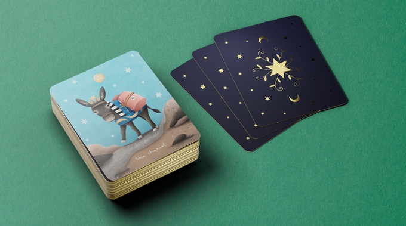

Introducing
FAUNABELLE
A beautifully illustrated tarot deck for children.
Hello! We're glad you're here.
We are proud to present FAUNABELLE:
a tarot deck featuring an illustrated cast of animals subtly loaded with symbolism.

Did You Know...
Tarot Cards can be used to foster
Self-Reflection
Understanding
Creativity
Empathy
in young children?
That’s right! Tarot cards go all the way back to the 15th Century when they were enjoyed as playing cards. Today, we can use the tarot as a tool of self-reflection and understanding. It allows us to look at a question or a circumstance through one of 78 lenses, the number of cards in a tarot deck. You can ask a question for yourself or for another person.